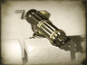

Requires
- Buildings: 
- Arts:
Basic Building Statistics (can be modified by difficulty level, arts, skills, traits and retainers)
- Cost: 14000
- Upgrades castle defences on the battlefield to gun batteries
- -2 to happiness from modernisation
Clan Effects
- +4 to modernisation (clan development)
Description
Guns are the final argument in war.
Gun batteries improve the defences of a castle by emplacing large numbers of artillery pieces in critical locations with good fields of fire. Any enemy foolish enough to mount a direct assault must cross a killing field bombarded from several directions by grape, shot and shell.